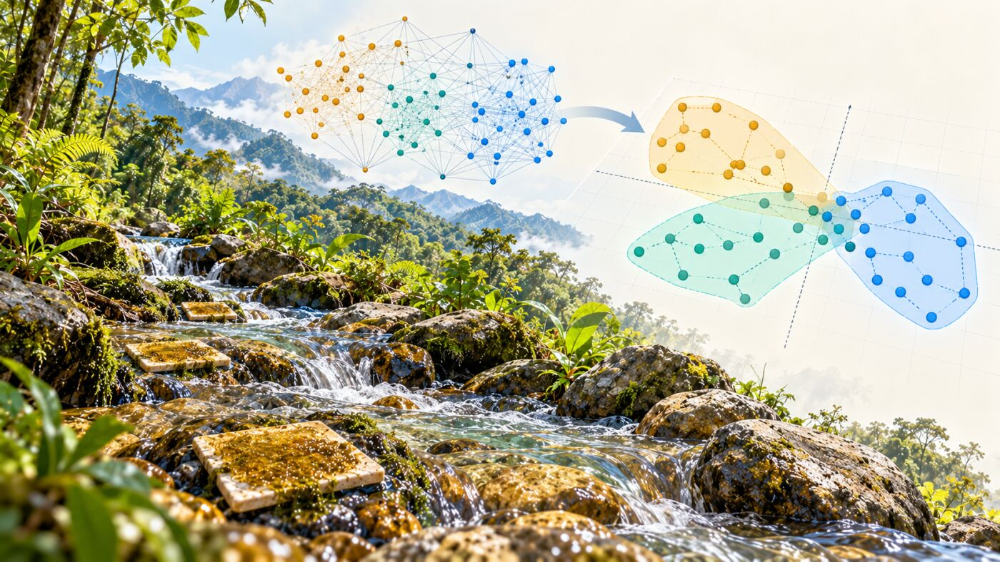
Taller 8. Escalamiento (NMDS) y Correspondencia (CA)
Materiales requeridos para el taller en clase
En el siguiente enlace se puede descargar el archivo comprimido del taller, con las bases de datos de microalgas perifíticas y de mesozooplancton estuarino (📰 Taller 8. Ordenación de comunidades: NMDS y CA).
Nota: una vez se descarguen los materiales, se requiere descomprimirlos antes de realizar cualquier procedimiento y seguir las orientaciones del docente para realizar los ejercicios requeridos.
Diapositivas en vivo - Slides.com

Objetivos del taller
Este taller acompaña la sesión del viernes de la Semana 4 (S10), después de las exposiciones del seminario de distancias, y la presentación 08 (“Ordenación multivariada: NMDS vs. CA”). Usa la matriz Y de géneros de microalgas construida en el Taller 5 y ya ordenada con un PCA ambiental en el Taller 7 (RA2, con lectura ecológica RA3). Al terminar, se podrá:
- Explicar por qué una matriz de especies se ordena a partir de una distancia con sentido ecológico y no con distancias euclidianas sobre los conteos.
- Ajustar un NMDS con
metaMDS(), elegir el número de dimensiones por el estrés y diagnosticar el ajuste con el diagrama de Shepard ygoodness(). - Leer un NMDS (grupos, trayectorias, variables ajustadas con
envfit()yordisurf()) sin confundir una figura descriptiva con una prueba formal. - Ajustar un análisis de correspondencias (CA) con
cca(), interpretar la inercia y el escalamiento, y reconocer el peso de los taxones con perfiles peculiares y el efecto arco. - Comparar NMDS, CA y PCA de Hellinger sobre la misma matriz y justificar la elección para el estudio de caso.
NotaBases de datos
- Microalgas (
Microalgas.xlsx): microalgas perifíticas en tres tributarios del río Gaira, Sierra Nevada de Santa Marta (Osorio Ávila et al., 2015). Cada fila es un sustrato artificial en un tributario (T1 a T3) y una visita semanal de colonización (1 a 8). - Plancton (hoja
Riquezadeplancton.xlsx): mesozooplancton del estuario del golfo de Urabá, Caribe colombiano (Vargas-Ospina et al., 2025). Se usa en el estudio de caso.
Código
# Librerías requeridas
library(tidyverse)
library(readxl)
library(kableExtra)
library(vegan)
library(ggrepel)
# Paletas del módulo
col_trib <- c(T1 = "#2C6FB7", T2 = "#E3A33B", T3 = "#3E9C8F")
col_zona <- c(Fluvial = "#A6761D", Estuarina = "#66A61E", Marina = "#1F78B4")
# Números con dos decimales fijos para el texto (−0.60 y no −0.6)
f2 <- function(x) formatC(x, format = "f", digits = 2)
f1 <- function(x) formatC(x, format = "f", digits = 1)
# Números con coma decimal para los párrafos de reporte
coma <- function(x, d = 2) formatC(x, format = "f", digits = d, decimal.mark = ",")Código
# Matrices F, X y Y de microalgas (igual que en la Parte 4 del Taller 5)
alg <- read_excel("Microalgas.xlsx", sheet = "Microalgas") %>%
rename(Fragilaria = Fragillaria, Nitzschia = Nitzchia,
Surirella = Surilella, Gyrosigma = Girosigma,
Achnanthes = Achnantes) %>%
mutate(Tributario = factor(Tributario),
Visita = factor(as.integer(sub(".*\\.", "", Cod)))) # T1.3 → 3
F_alg <- alg %>% select(Cod, Tributario, Visita)
X_alg <- alg %>% select(Amonio:Temp)
Y_alg <- alg %>% select(Fragilaria:Pinnularia)
# Control: mismas filas en las tres matrices
c(F = nrow(F_alg), X = nrow(X_alg), Y = nrow(Y_alg)) F X Y
24 24 24 En este taller la protagonista es la matriz Y: 24 muestras (3 tributarios × 8 visitas) y 21 géneros. Las 10 variables ambientales (matriz X) ya no construyen los ejes, como en el PCA del Taller 7: se proyectan después sobre la ordenación de la comunidad.
Antes de empezar: de la distancia al mapa
Toda ordenación de comunidades parte de una pregunta: ¿qué tan distintas son dos muestras en su composición? El PCA responde con la distancia euclidiana entre los valores de las variables, que funciona bien con variables ambientales continuas, pero no con abundancias llenas de ceros y muy sesgadas. Este taller trabaja dos alternativas:
| Técnica | Parte de | Busca | Entrega | Se juzga con |
|---|---|---|---|---|
| NMDS (escalamiento multidimensional no métrico) | Cualquier matriz de distancias (aquí, Bray-Curtis) | Un mapa en k dimensiones que respete el orden de las distancias | Coordenadas de muestras (y de especies, como promedios ponderados) | Estrés y diagrama de Shepard; no hay autovalores |
| CA (análisis de correspondencias) | La tabla de abundancias (distancia chi-cuadrado implícita) | Ejes que ordenen a la vez muestras y especies según sus perfiles relativos | Autovalores, inercia y coordenadas de muestras y especies | Porcentaje de inercia por eje y escalamiento |
Las dos son ordenaciones no restringidas, como el PCA: los ejes resumen la variación de Y sin mirar otras variables. El tributario y el ambiente se proyectan después, para interpretar. La pregunta «¿cuánto de la composición explica el ambiente?» es de una ordenación restringida (RDA o CCA, Taller 9), y «¿difieren los tributarios?», de una prueba (PERMANOVA, Taller 10).
Parte 1 — Por qué otra ordenación: dobles ceros y dominancia
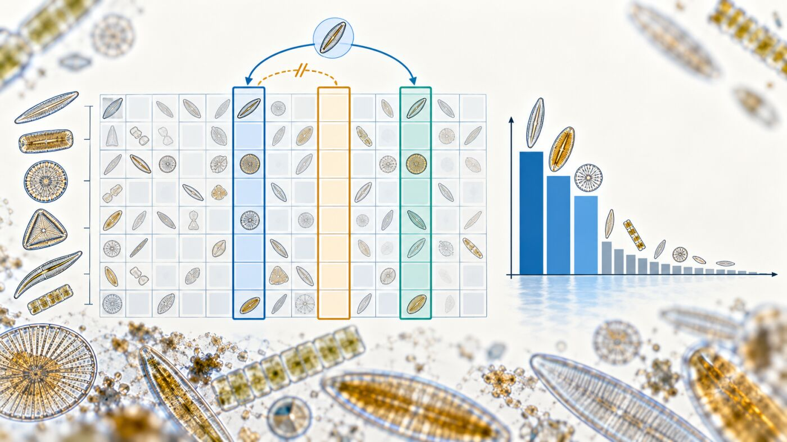
Pregunta: ¿Qué rasgos de la matriz de géneros hacen inadecuada la distancia euclidiana sobre los conteos? (Presentación 08, diap. 3–5)
Compartir ausencias no es parecerse
Se retoma el ejemplo de la diapositiva 4: tres sitios y cuatro especies. S1 y S2 no comparten ninguna especie; S1 y S3 comparten la especie A.
Código
# Tres sitios, cuatro especies (presentación 08, diap. 4)
ej <- data.frame(SpA = c(4, 0, 16), SpB = c(0, 4, 0),
SpC = c(0, 0, 2), SpD = c(0, 0, 10),
row.names = c("S1", "S2", "S3"))
# Distancia de S1 a S2 y a S3 con tres medidas
dist_ej <- function(d) as.matrix(d)["S1", c("S2", "S3")]
tab_ej <- rbind(Euclidiana = dist_ej(dist(ej)),
`Bray-Curtis` = dist_ej(vegdist(ej, "bray")),
Jaccard = dist_ej(vegdist(ej, "jaccard", binary = TRUE)))
tab_ej %>%
kbl(booktabs = TRUE, digits = 2, col.names = c("S1–S2", "S1–S3")) %>%
kable_classic(full_width = F) %>%
row_spec(0, bold = TRUE)| S1–S2 | S1–S3 | |
|---|---|---|
| Euclidiana | 5.66 | 15.75 |
| Bray-Curtis | 1.00 | 0.75 |
| Jaccard | 1.00 | 0.67 |
Con la distancia euclidiana, S1 queda más cerca de S2 (5.66) que de S3 (15.75): pesan las dos ausencias compartidas y los totales bajos. Bray-Curtis y Jaccard ignoran los dobles ceros y ubican a S1 más cerca de S3, con quien comparte una especie. En una matriz de comunidades, esa es la lectura con sentido ecológico.
Ceros y dominancia en las microalgas
Código
# Porcentaje de celdas en cero
pct_ceros <- 100 * mean(Y_alg == 0)
# Dobles ceros: géneros ausentes a la vez en cada par de muestras
Z <- as.matrix(Y_alg == 0) * 1
dobles <- (Z %*% t(Z))[upper.tri(diag(nrow(Z)))]
# Participación de cada género en el total de individuos
part <- sort(100 * colSums(Y_alg) / sum(Y_alg), decreasing = TRUE)
c(ceros = round(pct_ceros, 1), pares = length(dobles),
pares_con_dobles_ceros = round(100 * mean(dobles > 0), 1),
tres_dominantes = round(sum(part[1:3]), 1)) ceros pares pares_con_dobles_ceros
23.4 276.0 91.3
tres_dominantes
50.5 El 23.4 % de las celdas de Y son ceros, y el 91.3 % de los 276 pares de muestras comparte al menos un género ausente (en promedio, 2.2 por par). Además, la abundancia está muy concentrada:
Código
# Barras de participación ordenadas
tibble(Genero = names(part), Porcentaje = part) %>%
mutate(Dominante = row_number() <= 3) %>%
ggplot(aes(x = Porcentaje, y = fct_rev(fct_inorder(Genero)), fill = Dominante)) +
geom_col(show.legend = FALSE) +
scale_fill_manual(values = c(`TRUE` = "#2C6FB7", `FALSE` = "grey70")) +
labs(x = "Porcentaje del total de individuos", y = NULL) +
theme_bw()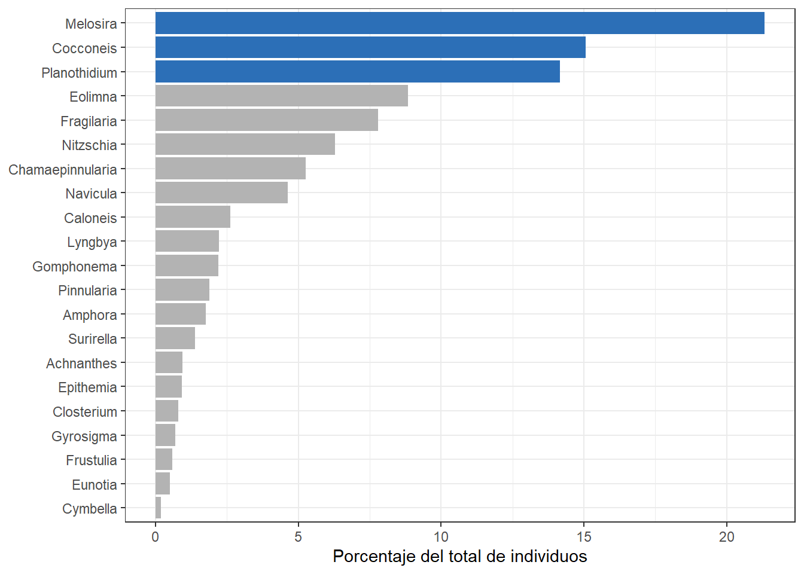
Melosira (21.3 %), Cocconeis (15.1 %) y Planothidium (14.2 %) reúnen el 50.5 % de los individuos, mientras que Cymbella apenas llega al 0.2 %. Con conteos crudos, cualquier distancia quedaría dominada por esos tres géneros.
La distancia como decisión
Lo que trajo el seminario de distancias se concreta aquí en dos decisiones que se declaran en los métodos: cómo transformar las abundancias y qué distancia calcular. metaMDS() las toma por defecto así: si las abundancias son altas, aplica raíz cuadrada y doble estandarización de Wisconsin (cada género dividido por su máximo y cada muestra por su total), y luego calcula Bray-Curtis.
Código
# Bray-Curtis sobre la matriz con la misma transformación que usa metaMDS()
d_bray <- vegdist(wisconsin(sqrt(Y_alg)), method = "bray")
D <- as.matrix(d_bray)
dimnames(D) <- list(F_alg$Cod, F_alg$Cod)
# Par más distinto y resumen de las 276 disimilitudes
par_max <- which(D == max(D), arr.ind = TRUE)[1, ]
c(n_pares = length(d_bray), minima = round(min(d_bray), 2),
mediana = round(median(d_bray), 2), maxima = round(max(d_bray), 2))n_pares minima mediana maxima
276.00 0.07 0.31 0.61 Las 276 disimilitudes van de 0.07 a 0.61. El par más distinto es T3.2–T1.1, dos muestras de las primeras visitas de tributarios distintos. Ninguna disimilitud llega a 1 porque todas las muestras comparten algún género: 6 géneros (entre ellos Melosira y Cocconeis) aparecen en las 24 muestras.
NotaDoble estandarización de Wisconsin
Al dividir cada género por su máximo, Melosira y un género escaso quedan en la misma escala (0 a 1); al dividir cada muestra por su total, se comparan proporciones y no tamaños de muestra. El NMDS resultante habla de composición relativa, no de cuántas algas colonizaron el sustrato. Si interesa la abundancia total, se analiza aparte (por ejemplo, con un GLM, Taller 4).
Para discutir: si en lugar de Bray-Curtis se usara Jaccard (presencia y ausencia), ¿qué información de la Figura 1 se perdería? ¿En qué proyecto del grupo sería esa la distancia adecuada?
Parte 2 — NMDS: ajuste, estrés y número de dimensiones
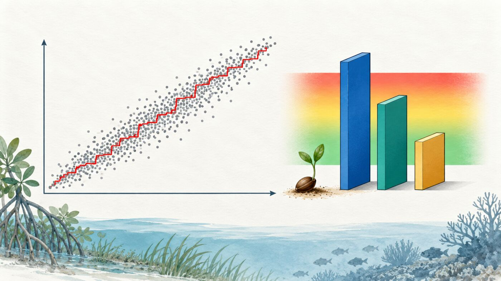
Pregunta: ¿Cuántas dimensiones necesita el mapa para respetar el orden de las 276 disimilitudes? (Presentación 08, diap. 6–10)
Estrés con k = 1, 2 y 3
El NMDS no calcula ejes a partir de una matriz: ubica las muestras en k dimensiones y las mueve hasta que el orden de sus distancias en el mapa imite el orden de las disimilitudes. El estrés mide el desajuste que queda (0 = ajuste perfecto). Se ajusta con 1, 2 y 3 dimensiones:
Código
# NMDS con Bray-Curtis para k = 1, 2 y 3 (misma semilla en cada ajuste)
nmds_k <- map(1:3, function(k) {
set.seed(2026)
metaMDS(Y_alg, distance = "bray", k = k, trymax = 100, trace = 0)
})
# Semáforo orientativo del estrés (presentación 08, diap. 8)
semaforo <- function(s) cut(s, c(0, 0.05, 0.10, 0.20, 0.30, 1),
labels = c("Excelente", "Buena", "Aceptable", "Pobre", "Casi arbitraria"))
tab_k <- tibble(k = 1:3,
Estres = map_dbl(nmds_k, "stress"),
Calidad = semaforo(Estres),
`Mejor solución repetida` = map_dbl(nmds_k, "converged"))
tab_k %>%
kbl(booktabs = TRUE, digits = 3,
col.names = c("k", "Estrés", "Calidad", "Mejor solución repetida")) %>%
kable_classic(full_width = F) %>%
row_spec(0, bold = TRUE)| k | Estrés | Calidad | Mejor solución repetida |
|---|---|---|---|
| 1 | 0.266 | Pobre | 1 |
| 2 | 0.119 | Aceptable | 9 |
| 3 | 0.064 | Buena | 12 |
Código
# Estrés frente a k con los umbrales del semáforo
ggplot(tab_k, aes(x = factor(k), y = Estres)) +
geom_col(fill = "#9DBFE3", width = 0.6) +
geom_text(aes(label = f2(Estres)), vjust = -0.4) +
geom_hline(yintercept = c(0.05, 0.10, 0.20),
linetype = "dashed",
color = "grey40") +
labs(x = "Dimensiones (k)", y = "Estrés") +
theme_bw()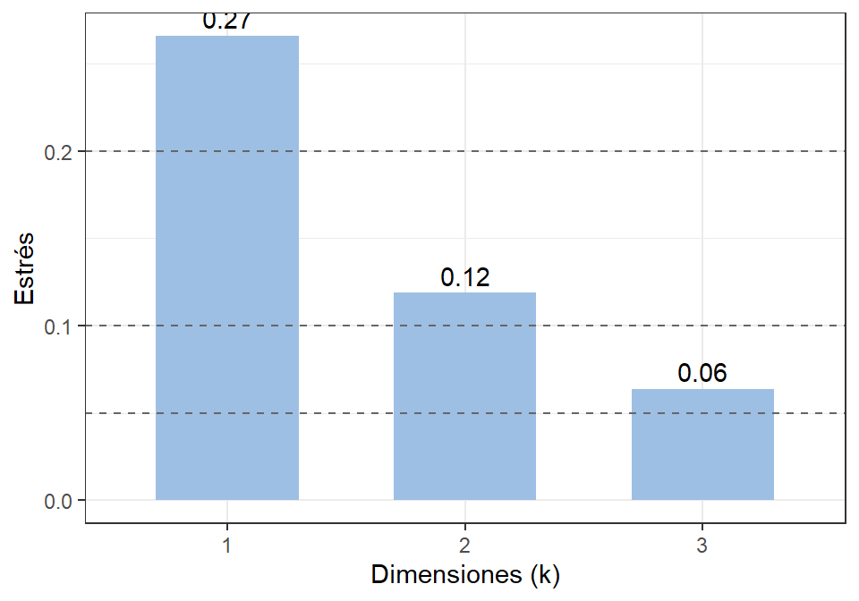
Con k = 1 el estrés es 0.27 (pobre): una sola dimensión no basta. Con k = 2 baja a 0.12 (aceptable) y con k = 3 a 0.06, pero a cambio de leer tres planos. Se elige el menor k con un estrés aceptable: k = 2.
El NMDS elegido
Código
# NMDS final: Bray-Curtis, k = 2
nmds <- nmds_k[[2]]
nmds
Call:
metaMDS(comm = Y_alg, distance = "bray", k = k, trymax = 100, trace = 0)
global Multidimensional Scaling using monoMDS
Data: wisconsin(sqrt(Y_alg))
Distance: bray
Dimensions: 2
Stress: 0.1188314
Stress type 1, weak ties
Best solution was repeated 9 times in 20 tries
The best solution was from try 0 (metric scaling or null solution)
Scaling: centring, PC rotation, halfchange scaling
Species: expanded scores based on 'wisconsin(sqrt(Y_alg))' Tres líneas de la salida se reportan siempre:
Data: wisconsin(sqrt(Y_alg)): la transformación que aplicómetaMDS()por su cuenta. Se declara en los métodos o se desactiva conautotransform = FALSE.- Stress (0.1188): el ajuste final.
- Best solution was repeated (9 de 20 arranques): la mejor configuración apareció 9 veces en 20 arranques. Si se repite, la solución es estable; si no, se aumenta
trymax.
Diagnóstico: diagrama de Shepard
Código
# Disimilitud observada frente a distancia en el mapa
stressplot(nmds, p.col = "grey55", l.col = "#C0392B")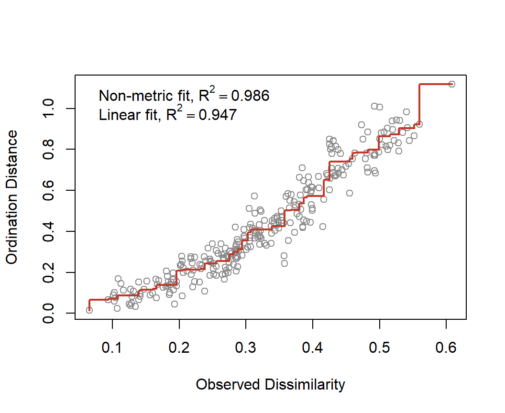
Código
# R² no métrico (= 1 − estrés²) y R² lineal entre disimilitud y distancia en el mapa
r2_nm <- 1 - nmds$stress^2
r2_lin <- cor(d_bray, dist(scores(nmds, display = "sites")))^2
c(R2_no_metrico = round(r2_nm, 3), R2_lineal = round(r2_lin, 3))R2_no_metrico R2_lineal
0.986 0.905 La nube es estrecha alrededor de la escalera: R² no métrico = 0.986 (que es 1 − estrés²) y R² lineal = 0.905. La relación es monótona, aunque no perfectamente lineal, y eso basta: el NMDS solo se compromete con el orden.
Diagnóstico por muestra: goodness()
Código
# Contribución de cada muestra al estrés
bondad <- tibble(Muestra = F_alg$Cod, Bondad = goodness(nmds)) %>%
arrange(desc(Bondad))
bondad %>%
head(5) %>%
kbl(booktabs = TRUE, digits = 3) %>%
kable_classic(full_width = F) %>%
row_spec(0, bold = TRUE)| Muestra | Bondad |
|---|---|
| T2.2 | 0.037 |
| T2.1 | 0.036 |
| T1.2 | 0.034 |
| T1.3 | 0.032 |
| T1.1 | 0.031 |
Código
# Control: la suma de los cuadrados es el estrés al cuadrado
c(suma = sum(bondad$Bondad^2), estres2 = nmds$stress^2) suma estres2
0.0141209 0.0141209 goodness() reparte el estrés entre las muestras (sus cuadrados suman estrés²). Las peor representadas son T2.2 y T2.1, pero sus valores (0.037 y 0.036) son parecidos a los del resto (el menor es 0.012): ninguna muestra concentra el desajuste.
La semilla
Código
# Cinco semillas distintas: estrés y correlación de Procrustes con el NMDS final
semillas <- map_dfr(1:5, function(s) {
set.seed(s)
m <- metaMDS(Y_alg, distance = "bray", k = 2, trymax = 100, trace = 0)
tibble(Semilla = s, Estres = m$stress, Repeticiones = m$converged,
r_Procrustes = sqrt(1 - procrustes(nmds, m, symmetric = TRUE)$ss))
})
semillas %>%
kbl(booktabs = TRUE, digits = 4) %>%
kable_classic(full_width = F) %>%
row_spec(0, bold = TRUE)| Semilla | Estres | Repeticiones | r_Procrustes |
|---|---|---|---|
| 1 | 0.1188 | 4 | 1 |
| 2 | 0.1188 | 3 | 1 |
| 3 | 0.1188 | 6 | 1 |
| 4 | 0.1188 | 4 | 1 |
| 5 | 0.1188 | 2 | 1 |
Con estos datos, las cinco semillas llegan al mismo estrés y a la misma configuración (correlación de Procrustes = 1.00 tras rotar). Cambia cuántas veces se repite la mejor solución. Ocurre porque el primer arranque de metaMDS() no es al azar sino una ordenación métrica, y aquí fue el mejor. Con otras matrices la mejor solución sale de un arranque aleatorio (se verá en el estudio de caso), y entonces la semilla sí puede cambiar el resultado.
ImportantePor qué siempre
set.seed()
El NMDS no tiene solución única: cada corrida puede dar una configuración algo distinta, rotada o reflejada. set.seed() hace que la figura y las cifras se reproduzcan exactamente. Una configuración rotada o reflejada se lee igual: en un NMDS se interpretan las distancias entre puntos, no los valores de las coordenadas.
Para discutir: si con k = 2 el estrés hubiera sido 0.22, ¿se interpretaría el mapa? ¿Qué se haría: subir k, cambiar la transformación o la distancia, o reportar otra técnica?
Parte 3 — Lectura del NMDS: tributarios, visitas y ambiente
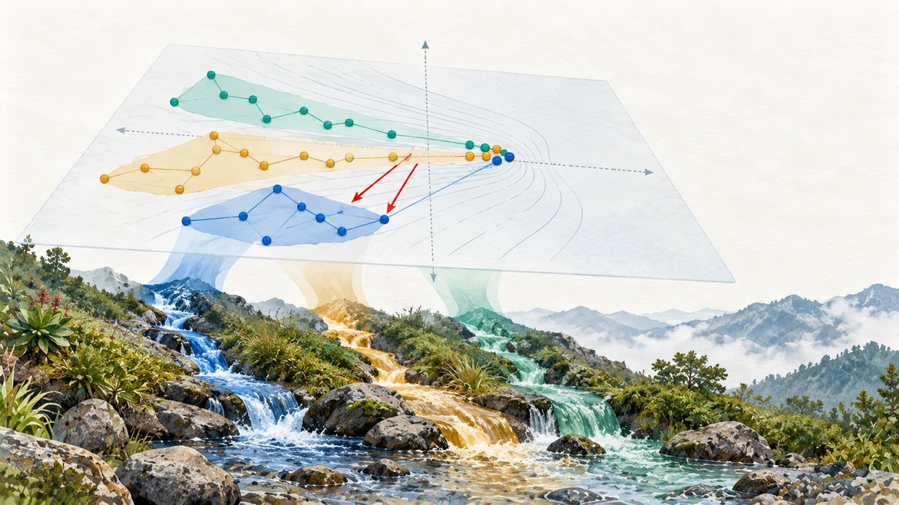
Pregunta: ¿Se separan los tributarios por su composición de microalgas? ¿Cambia ese patrón a lo largo de la colonización, y qué variables ambientales lo acompañan? (Presentación 08, diap. 11–13)
Muestras, polígonos y trayectorias
Código
# Coordenadas de las muestras con su tributario y visita
sc_nmds <- as_tibble(scores(nmds, display = "sites")) %>%
bind_cols(F_alg)
# Polígono que envuelve a cada tributario (equivalente a ordihull())
poligonos <- sc_nmds %>%
group_by(Tributario) %>%
slice(chull(NMDS1, NMDS2))Código
# NMDS con polígonos por tributario y trayectoria de las visitas
ggplot(sc_nmds, aes(x = NMDS1, y = NMDS2, color = Tributario)) +
geom_polygon(data = poligonos, aes(fill = Tributario), alpha = 0.12, linewidth = 0.4) +
geom_path(aes(group = Tributario), linewidth = 0.4, alpha = 0.6) +
geom_point(size = 6, alpha = 0.25) +
geom_text(aes(label = Visita), size = 3.5, fontface = "bold", show.legend = FALSE) +
geom_hline(yintercept = 0, linetype = 3) + geom_vline(xintercept = 0, linetype = 3) +
scale_color_manual(values = col_trib) + scale_fill_manual(values = col_trib) +
coord_equal() +
annotate("text", x = Inf, y = -Inf, hjust = 1.05, vjust = -0.6, size = 3.5,
label = paste("Estrés =", f2(nmds$stress))) +
theme_bw()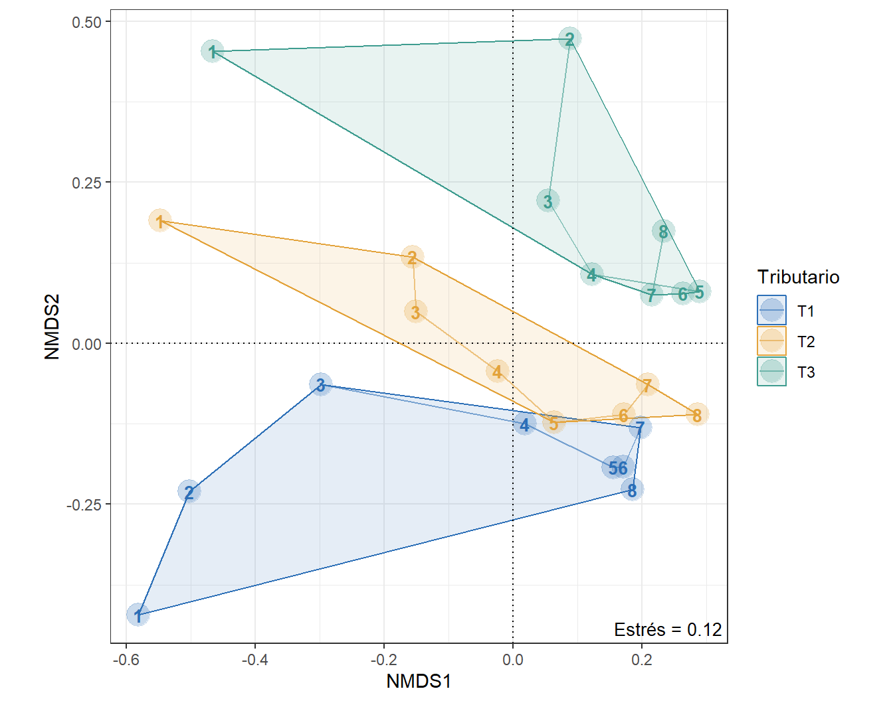
Las primeras visitas de cada tributario quedan en el extremo negativo del NMDS1, separadas entre sí; desde la cuarta o la quinta, las trayectorias convergen hacia el extremo positivo. Sobre el NMDS2, los tres tributarios se ordenan (T3 arriba, T2 en medio, T1 abajo) y sus polígonos apenas se tocan. Se puede comprobar con las disimilitudes, sin depender de la figura:
Código
# Disimilitud media entre los tres tributarios en cada visita
conv <- tibble(Visita = 1:8,
`Bray-Curtis medio entre tributarios` = map_dbl(1:8, function(v) {
i <- which(F_alg$Visita == v)
mean(as.dist(D[i, i]))
}))
conv %>%
kbl(booktabs = TRUE, digits = 2) %>%
kable_classic(full_width = F) %>%
row_spec(0, bold = TRUE)| Visita | Bray-Curtis medio entre tributarios |
|---|---|
| 1 | 0.39 |
| 2 | 0.42 |
| 3 | 0.28 |
| 4 | 0.22 |
| 5 | 0.25 |
| 6 | 0.22 |
| 7 | 0.18 |
| 8 | 0.27 |
La disimilitud entre tributarios baja de 0.39 en la primera visita a 0.18 en la 7.ª: la colonización hace más parecidas las comunidades de los tres tributarios. La octava visita (0.27) se separa un poco, algo que el mapa también muestra.
NotaLo que no se lee en un NMDS
- No hay porcentaje de varianza por eje: los ejes no tienen autovalores; el ajuste se resume en el estrés.
- La orientación es arbitraria:
metaMDS()rota el resultado para que el NMDS1 recoja la mayor dispersión de los puntos (PC rotationen la salida), pero el NMDS1 no es «más importante» en el sentido de un PCA. - Las distancias se leen en el plano completo: dos muestras cercanas en el NMDS1 pueden estar lejos en el NMDS2.
Géneros sobre el NMDS
metaMDS() ubica cada género en el promedio ponderado de las muestras donde aparece (con la matriz transformada). Así se ve qué géneros caracterizan cada zona del mapa:
Código
# Coordenadas de los géneros
sc_gen <- as_tibble(scores(nmds, display = "species"), rownames = "Genero") %>%
mutate(Abundancia = colSums(Y_alg)[Genero],
Extremo = rank(-sqrt(NMDS1^2 + NMDS2^2)) <= 3,
Rotulo = rank(-Abundancia) <= 8 | Extremo)
ggplot() +
geom_point(data = sc_nmds,
aes(NMDS1, NMDS2,
color = Tributario),
size = 2.5, alpha = 0.6) +
geom_point(data = sc_gen, aes(NMDS1, NMDS2),
shape = 3, color = "grey30") +
geom_text_repel(data = filter(sc_gen, Rotulo),
aes(NMDS1, NMDS2, label = Genero),
fontface = "italic",
size = 3.3, color = "grey15") +
geom_hline(yintercept = 0, linetype = 3) +
geom_vline(xintercept = 0, linetype = 3) +
scale_color_manual(values = col_trib) +
coord_equal() +
theme_bw()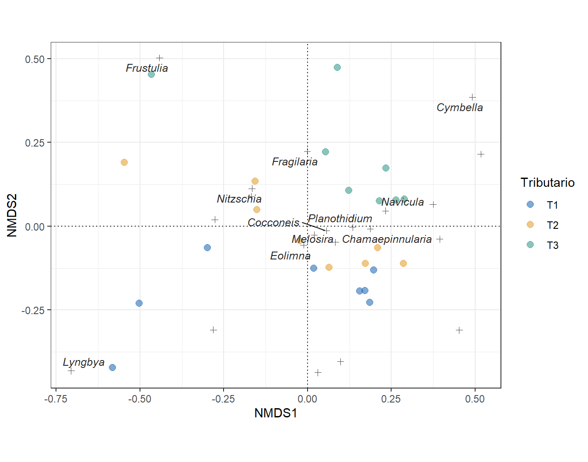
Los géneros dominantes (Melosira, Cocconeis, Planothidium) quedan cerca del centro: están en todas las muestras y no distinguen ninguna. Los géneros alejados del centro son los que marcan diferencias, como Lyngbya, Cymbella y Frustulia.
Variables ambientales: envfit()
envfit() busca, para cada variable, la dirección del mapa en la que aumenta más y mide con r² qué tan bien la explica el plano; el valor p sale de permutaciones. Como cada variable se ajusta por separado, las unidades distintas no importan (a diferencia del PCA) y se usan las variables en sus unidades originales.
Código
# Ajuste de las diez variables ambientales sobre el NMDS (999 permutaciones)
set.seed(2026)
ef_amb <- envfit(nmds, X_alg, permutations = 999)
# Tabla con r², p y p ajustado (Holm) sobre la familia de 10 variables
tab_amb <- tibble(Variable = names(ef_amb$vectors$r),
r2 = ef_amb$vectors$r,
p = ef_amb$vectors$pvals) %>%
mutate(p_Holm = p.adjust(p, method = "holm")) %>%
arrange(p)
tab_amb %>%
kbl(booktabs = TRUE, digits = c(0, 2, 3, 3),
col.names = c("Variable", "r²", "p", "p (Holm)")) %>%
kable_classic(full_width = F) %>%
row_spec(0, bold = TRUE)| Variable | r² | p | p (Holm) |
|---|---|---|---|
| Conductividad | 0.49 | 0.003 | 0.030 |
| Temp | 0.39 | 0.011 | 0.099 |
| Luz | 0.18 | 0.112 | 0.896 |
| Nitrito | 0.17 | 0.139 | 0.973 |
| Caudal | 0.15 | 0.212 | 1.000 |
| pH | 0.13 | 0.245 | 1.000 |
| Vel_Corriente | 0.09 | 0.389 | 1.000 |
| Amonio | 0.02 | 0.762 | 1.000 |
| Oxigeno | 0.02 | 0.848 | 1.000 |
| Nitrato | 0.01 | 0.933 | 1.000 |
Código
# Valores para el texto
ra <- function(v, col) tab_amb[[col]][tab_amb$Variable == v]
cond_trib <- tapply(X_alg$Conductividad, F_alg$Tributario, mean)La conductividad (r² = 0.49; p = 0.003) y la temperatura (r² = 0.39; p = 0.011) son las únicas con p < 0.05; las otras ocho tienen r² ≤ 0.18. Pero se hicieron 10 pruebas: con el ajuste de Holm, solo la conductividad se sostiene (p = 0.03); la temperatura pasa a p = 0.10. T1 tiene la mayor conductividad (≈ 76, frente a ≈ 44 en T2 y ≈ 45 en T3), el mismo gradiente que separó a T1 en el PCA ambiental del Taller 7.
Código
# Flechas de las variables con p < 0.05, reescaladas para caber en el mapa
flechas <- as_tibble(scores(ef_amb, display = "vectors"), rownames = "Variable") %>%
filter(Variable %in% tab_amb$Variable[tab_amb$p < 0.05])
mult <- 0.8 * max(abs(sc_nmds[, c("NMDS1", "NMDS2")])) / max(abs(flechas[, c("NMDS1", "NMDS2")]))
ggplot(sc_nmds, aes(NMDS1, NMDS2)) +
geom_polygon(data = poligonos,
aes(fill = Tributario, color = Tributario),
alpha = 0.12) +
geom_text(aes(label = Visita, color = Tributario),
fontface = "bold", show.legend = FALSE) +
geom_segment(data = flechas, aes(x = 0, y = 0,
xend = NMDS1 * mult,
yend = NMDS2 * mult),
arrow = arrow(length = unit(0.25, "cm")),
color = "#C0392B", linewidth = 0.7) +
geom_text_repel(data = flechas,
aes(x = NMDS1 * mult, y = NMDS2 * mult, label = Variable),
color = "#C0392B", nudge_y = -0.04) +
geom_hline(yintercept = 0, linetype = 3) +
geom_vline(xintercept = 0, linetype = 3) +
scale_color_manual(values = col_trib) +
scale_fill_manual(values = col_trib) +
coord_equal() +
theme_bw()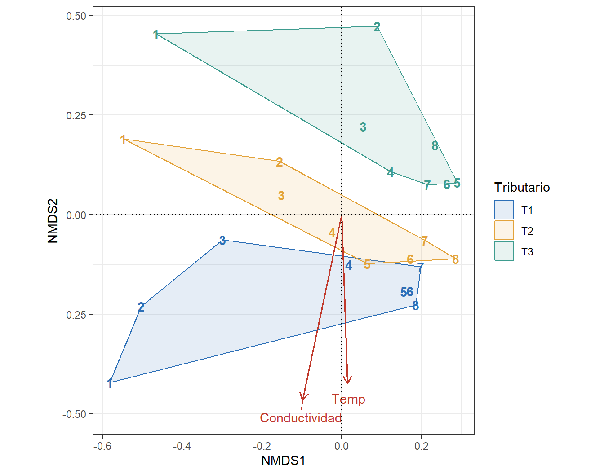
Una relación no lineal: ordisurf()
Una flecha supone que la variable cambia en línea recta a través del mapa. ordisurf() ajusta en cambio una superficie suave (un GAM) y dibuja sus curvas de nivel:
Código
# Superficie de la temperatura sobre el NMDS
os_temp <- ordisurf(nmds ~ Temp, data = X_alg,
col = "#C0392B", main = "",
labcex = 0.8, trace = FALSE)
points(scores(nmds, display = "sites"),
pch = 19, col = col_trib[F_alg$Tributario])
legend("topleft", legend = names(col_trib),
col = col_trib, pch = 19, bty = "n")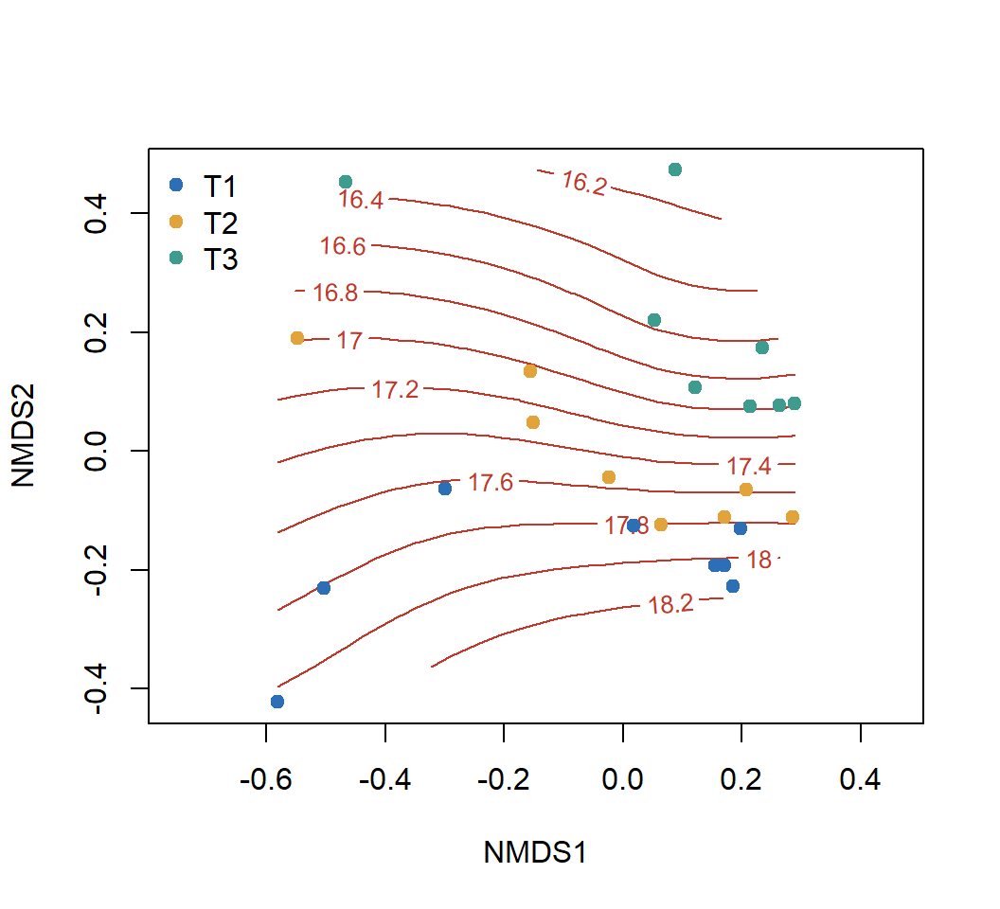
Código
# Resumen de la superficie y temperatura media de cada tributario
s_temp <- summary(os_temp)$s.table
s_temp edf Ref.df F p-value
s(x1,x2) 3.318903 9 1.731433 0.005035229Código
temp_trib <- tapply(X_alg$Temp, F_alg$Tributario, mean)
round(temp_trib, 1) T1 T2 T3
18.1 17.8 16.2 La superficie de la temperatura es significativa (gl efectivos = 3.3; p = 0.005). La temperatura aumenta de T3 (16.2 °C en promedio, arriba en el mapa) a T1 (18.1 °C, abajo), pero las curvas de nivel no son rectas paralelas: se inclinan en el lado izquierdo del mapa, donde están las primeras visitas. La flecha de envfit() resume ese patrón con una sola dirección. Como en envfit(), es un ajuste indirecto: el NMDS no usó la temperatura para ubicar las muestras.
AdvertenciaDiseño (RA1): la figura describe, no prueba
Las 8 visitas de un tributario son semanas sucesivas de colonización sobre los mismos sustratos, y las de los tres tributarios se tomaron en las mismas fechas: no son réplicas independientes. envfit() permuta las muestras libremente y su p es optimista; además, los polígonos solo muestran la dispersión. La prueba formal de diferencias en composición entre tributarios, con la visita como bloque, es la PERMANOVA del Taller 10.
TipCómo reportar el resultado
La composición de microalgas perifíticas se ordenó con un NMDS sobre la disimilitud de Bray-Curtis (abundancias con raíz cuadrada y doble estandarización de Wisconsin; k = 2; estrés = 0,12; R² no métrico = 0,986). Las primeras visitas de cada tributario se separaron y, desde la cuarta, convergieron hacia una composición común. La conductividad se asoció con la ordenación (envfit: r² = 0,49; p ajustado por Holm = 0,03; 999 permutaciones) y la temperatura mostró una relación no lineal (ordisurf: p = 0,005).
El párrafo nombra la distancia, la transformación, k, el estrés, el patrón y las variables con su prueba (presentación 08, diap. 20).
Para discutir: en el PCA ambiental (Taller 7), T2 y T3 se solapaban. ¿Se solapan también sus comunidades en la Figura 4? ¿Qué sugiere eso sobre el papel del ambiente frente al tiempo de colonización?
Parte 4 — Análisis de correspondencias (CA)
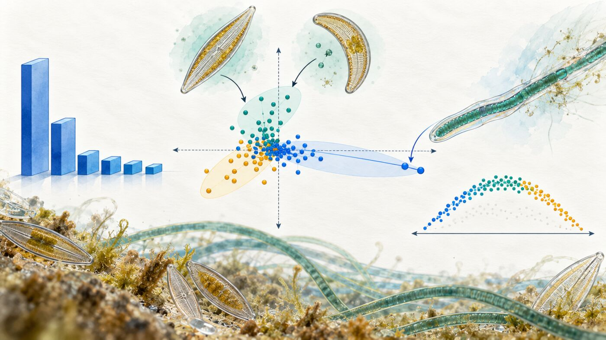
Pregunta: ¿Qué géneros caracterizan a cada tributario y a cada momento de la colonización cuando se ordenan muestras y géneros a la vez? (Presentación 08, diap. 14–18)
Inercia y autovalores
El CA compara perfiles relativos: la proporción de cada género dentro de cada muestra, ponderada por los totales de filas y columnas (distancia chi-cuadrado). En vegan, un CA es un cca() sin variables explicativas:
Código
# CA de los géneros de microalgas (conteos crudos)
ca <- cca(Y_alg)
# Inercia total: chi-cuadrado de la tabla dividido por su gran total
chi_tabla <- suppressWarnings(chisq.test(Y_alg)$statistic)
c(inercia_cca = ca$tot.chi, chi2_sobre_N = unname(chi_tabla / sum(Y_alg))) inercia_cca chi2_sobre_N
0.4037948 0.4037948 Código
# Autovalores, porcentaje y acumulado de los seis primeros ejes
ev_ca <- tibble(Eje = names(eigenvals(ca)),
Autovalor = unname(eigenvals(ca)),
Porcentaje = 100 * Autovalor / sum(Autovalor),
Acumulado = cumsum(Porcentaje))
ev_ca %>%
head(6) %>%
kbl(booktabs = TRUE, digits = c(0, 3, 1, 1)) %>%
kable_classic(full_width = F) %>%
row_spec(0, bold = TRUE)| Eje | Autovalor | Porcentaje | Acumulado |
|---|---|---|---|
| CA1 | 0.16133129 | 39.953776 | 40.0 |
| CA2 | 0.08259875 | 20.455623 | 60.4 |
| CA3 | 0.03788865 | 9.383143 | 69.8 |
| CA4 | 0.03367280 | 8.339087 | 78.1 |
| CA5 | 0.03018278 | 7.474780 | 85.6 |
| CA6 | 0.01620392 | 4.012909 | 89.6 |
La inercia total es 0.404. A diferencia del PCA, los autovalores del CA están entre 0 y 1: el CA1 extrae 0.161 (40.0 %) y el CA2 0.083 (20.5 %); juntos, el 60.4 % de la inercia. Los siguientes ejes caen a 9.4, 8.3, 7.5 y 4.0 %.
NotaConteos crudos en el CA
El CA se ajusta sobre los conteos sin transformar: la distancia chi-cuadrado ya trabaja con proporciones y pondera por los totales. Por eso no se aplica Hellinger ni Wisconsin antes de cca().
Escalamiento 1 frente a escalamiento 2
Código
# Coordenadas de muestras y géneros con los dos escalamientos
coord_ca <- map_dfr(1:2, function(esc) {
bind_rows(
as_tibble(scores(ca, display = "sites",
scaling = esc, choices = 1:2)) %>%
mutate(Tipo = "Muestra",
Rotulo = as.character(F_alg$Visita),
Tributario = F_alg$Tributario),
as_tibble(scores(ca, display = "species",
scaling = esc, choices = 1:2),
rownames = "Rotulo") %>%
mutate(Tipo = "Género")
) %>% mutate(Escalamiento = paste("Escalamiento", esc))
})
# Géneros que se rotulan: los tres más extremos en cada eje (escalamiento 2)
gen_ca <- as_tibble(scores(ca, display = "species", scaling = 2),
rownames = "Genero")
rotular <- unique(c(gen_ca$Genero[order(-abs(gen_ca$CA1))][1:3],
gen_ca$Genero[order(-abs(gen_ca$CA2))][1:3]))Código
# CA con los dos escalamientos lado a lado
ggplot(coord_ca, aes(CA1, CA2)) +
geom_hline(yintercept = 0, linetype = 3) +
geom_vline(xintercept = 0, linetype = 3) +
geom_point(data = filter(coord_ca, Tipo == "Género"),
shape = 3, color = "grey55") +
geom_text_repel(data = filter(coord_ca, Tipo == "Género", Rotulo %in% rotular),
aes(label = Rotulo),
fontface = "italic",
size = 3.2, color = "grey15") +
geom_text(data = filter(coord_ca, Tipo == "Muestra"),
aes(label = Rotulo, color = Tributario),
fontface = "bold", key_glyph = "point") +
scale_color_manual(values = col_trib) +
facet_wrap(~ Escalamiento, scales = "free") +
labs(x = paste0("CA1 (", f1(ev_ca$Porcentaje[1]), " %)"),
y = paste0("CA2 (", f1(ev_ca$Porcentaje[2]), " %)")) +
theme_bw()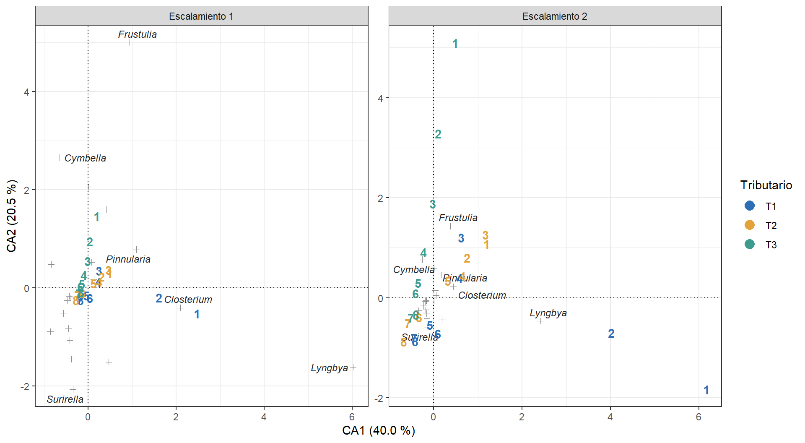
| Escalamiento | Interesan | Se lee |
|---|---|---|
1 (scaling = 1) |
Las muestras | Las muestras quedan en el centro de gravedad de sus géneros; las distancias entre muestras aproximan sus distancias chi-cuadrado |
2 (scaling = 2) |
Los géneros | Cada género queda en el centro de gravedad de las muestras donde es relativamente más abundante; las distancias entre géneros aproximan sus distancias chi-cuadrado |
Código
# Valores para el texto
lyn_trib <- tapply(Y_alg$Lyngbya, F_alg$Tributario, sum)
sc_s1 <- as_tibble(scores(ca, display = "sites", scaling = 1)) %>%
bind_cols(F_alg)
cym_n <- sum(Y_alg$Cymbella > 0)
cym_t <- unique(F_alg$Tributario[Y_alg$Cymbella > 0])- CA1 (40.0 %): lo define Lyngbya, una cianobacteria filamentosa concentrada en T1 (201 de sus 299 individuos). Arrastra al extremo a las visitas 1 y 2 de T1 (CA1 = 2.48 y 1.61 en el escalamiento 1).
- CA2 (20.5 %): lo definen Frustulia y Cymbella, propias de T3, y separa las primeras visitas de ese tributario (T3.1: CA2 = 1.46; T3.2: 0.94).
- El centro: las visitas tardías y los géneros comunes se amontonan cerca del origen, con una composición «promedio».
El patrón coincide con el NMDS (primeras visitas distintas, últimas convergentes), pero el CA lo exagera: dos muestras con un perfil peculiar ocupan casi todo el primer eje.
Taxones raros y perfiles peculiares
Código
# Frecuencia de aparición de cada género (número de muestras con presencia)
frec <- sort(colSums(Y_alg > 0))
head(frec, 5) Cymbella Eunotia Closterium Surirella Lyngbya
4 11 12 12 14 Código
# CA sin los géneros presentes en menos de 5 muestras, y CA sin Lyngbya
ca_frec <- cca(Y_alg[, colSums(Y_alg > 0) >= 5])
ca_lyn <- cca(Y_alg %>% select(-Lyngbya))
pct2 <- function(m) round(100 * eigenvals(m)[1:2] / sum(eigenvals(m)), 1)
rbind(Completo = pct2(ca), `Sin raros (< 5 muestras)` = pct2(ca_frec), `Sin Lyngbya` = pct2(ca_lyn)) CA1 CA2
Completo 40.0 20.5
Sin raros (< 5 muestras) 40.6 20.6
Sin Lyngbya 32.5 14.2Cymbella aparece en 4 de 24 muestras, todas de T3: es el único género raro por frecuencia. Quitarlo apenas cambia los ejes (CA1 = 40.6 %). En cambio, Lyngbya no es raro (14 muestras), pero su perfil está tan concentrado que sin él el CA1 baja a 32.5 % y el plano cambia. En el CA, el problema no es solo la rareza sino cualquier composición peculiar, porque la ponderación chi-cuadrado amplifica las desviaciones de los perfiles promedio.
Longitud del gradiente y efecto arco
Código
# DCA: longitud del primer eje en unidades de desviación estándar (DE)
dca <- decorana(Y_alg)
long_dca1 <- max(dca$rproj[, 1]) - min(dca$rproj[, 1])
round(long_dca1, 2)[1] 1.64El primer eje del DCA mide 1.6 DE: un gradiente corto (< 3 DE), donde la mayoría de los géneros aparece en casi todas las muestras. En gradientes cortos, un método lineal como el PCA de Hellinger (o la RDA) es adecuado; el CA está pensado para gradientes largos (> 4 DE), en los que cada especie tiene su óptimo y desaparece en los extremos.
En esos gradientes largos aparece el efecto arco: el CA2 resulta ser una curva del CA1 y no un gradiente nuevo. Se ilustra con una comunidad simulada de 12 especies con respuesta unimodal a lo largo de un gradiente (por ejemplo, de salinidad):
Código
# Comunidad simulada: 30 sitios en un gradiente y 12 especies con óptimos escalonados
set.seed(2026)
gradiente <- seq(0, 100, length.out = 30)
optimos <- seq(0, 100, length.out = 12)
media_sim <- outer(gradiente, optimos, function(x, o) 25 * exp(-(x - o)^2 / (2 * 12^2)))
Y_sim <- matrix(rpois(length(media_sim), media_sim), nrow = 30)
# CA y DCA de la comunidad simulada
ca_sim <- cca(Y_sim)
dca_sim <- decorana(Y_sim)
long_sim <- max(dca_sim$rproj[, 1]) - min(dca_sim$rproj[, 1])Código
# Sitios en el plano CA1–CA2, coloreados por su posición real en el gradiente
as_tibble(scores(ca_sim, display = "sites", scaling = 1)) %>%
mutate(Gradiente = gradiente) %>%
ggplot(aes(CA1, CA2, color = Gradiente)) +
geom_path(color = "grey70") +
geom_point(size = 3) +
scale_color_viridis_c() +
theme_bw()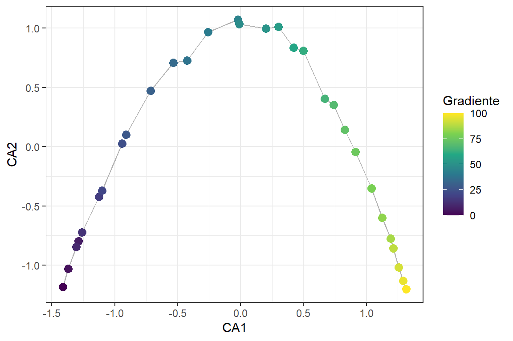
El gradiente simulado es uno solo, pero el CA lo dibuja como un arco: el centro del gradiente queda en un extremo del CA2 y los dos extremos del gradiente en el otro (el signo es arbitrario). El CA2 no es un gradiente nuevo, sino el mismo gradiente doblado. Su primer eje en el DCA mide 6.8 DE. El DCA (decorana()) «endereza» el arco por segmentos; sus detalles y la opción iweigh = 1 para reducir el peso de los raros están en el material complementario.
TipCómo reportar el resultado
Un análisis de correspondencias de las abundancias de géneros (inercia total = 0,404) extrajo el 40,0 % de la inercia en el CA1 y el 20,5 % en el CA2 (escalamiento 2). El CA1 reflejó la concentración de Lyngbya en las primeras visitas de T1, y el CA2, la de Frustulia y Cymbella en T3. El gradiente fue corto (DCA1 = 1,6 DE).
Para discutir: en el bentos de fondos blandos o en las praderas de pastos marinos, ¿qué especies podrían jugar el papel de Lyngbya (abundantes en pocas estaciones)? ¿Qué se haría antes de reportar un CA con esos datos?
Parte 5 — NMDS, CA y PCA de Hellinger: tres mapas de la misma matriz
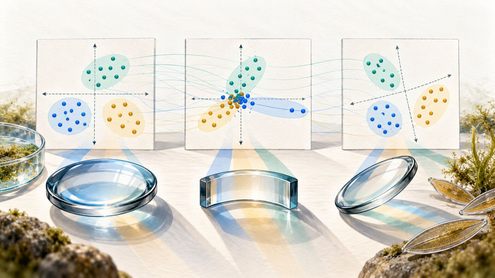
Pregunta: ¿Cuentan la misma historia las tres ordenaciones de los géneros? (Presentación 08, diap. 19 y 21)
Código
# PCA de Hellinger de los géneros
Y_hel <- decostand(Y_alg, method = "hellinger")
pca_hel <- rda(Y_hel)
pct_hel <- 100 * eigenvals(pca_hel) / sum(eigenvals(pca_hel))
# Correlación de Procrustes de cada técnica con el NMDS (999 permutaciones)
set.seed(2026)
pro_ca <- protest(nmds, ca, permutations = 999)
set.seed(2026)
pro_pca <- protest(nmds, pca_hel, permutations = 999)
c(PC1_PC2 = round(sum(pct_hel[1:2]), 1),
r_NMDS_CA = round(pro_ca$t0, 2), r_NMDS_PCA = round(pro_pca$t0, 2)) PC1_PC2 r_NMDS_CA r_NMDS_PCA
55.80 0.87 0.94 Código
# Coordenadas de las tres técnicas en una sola tabla
tres <- bind_rows(
as_tibble(scores(nmds, display = "sites"),
.name_repair = ~ c("Eje1", "Eje2")) %>%
mutate(Tecnica = paste0("NMDS (estrés = ", f2(nmds$stress), ")")),
as_tibble(scores(ca, display = "sites", scaling = 1, choices = 1:2),
.name_repair = ~ c("Eje1", "Eje2")) %>%
mutate(Tecnica = paste0("CA (", round(ev_ca$Acumulado[2], 1), " %)")),
as_tibble(scores(pca_hel, display = "sites", scaling = 1, choices = 1:2),
.name_repair = ~ c("Eje1", "Eje2")) %>%
mutate(Tecnica = paste0("PCA de Hellinger (", round(sum(pct_hel[1:2]), 1), " %)"))
) %>%
mutate(Tributario = rep(F_alg$Tributario, 3),
Visita = rep(F_alg$Visita, 3),
Tecnica = fct_inorder(Tecnica))
ggplot(tres, aes(Eje1, Eje2, color = Tributario, label = Visita)) +
geom_hline(yintercept = 0, linetype = 3) +
geom_vline(xintercept = 0, linetype = 3) +
geom_text(fontface = "bold", key_glyph = "point") +
scale_color_manual(values = col_trib) +
facet_wrap(~ Tecnica, scales = "free") +
labs(x = "Eje 1", y = "Eje 2") +
theme_bw()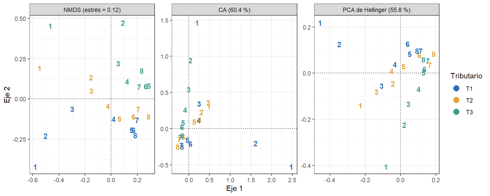
Las tres coinciden en el patrón general (primeras visitas separadas por tributario, últimas en el centro). La correlación de Procrustes, que compara dos configuraciones tras rotarlas y escalarlas, es 0.94 entre el NMDS y el PCA de Hellinger y 0.87 entre el NMDS y el CA: el CA es el que más se aparta, porque concentra su primer eje en Lyngbya y dos muestras.
| Criterio | NMDS | CA | PCA de Hellinger |
|---|---|---|---|
| Qué conserva | El orden de las distancias | Distancias chi-cuadrado | Distancias euclidianas entre perfiles con raíz cuadrada |
| Distancia | Cualquiera (aquí Bray-Curtis) | Chi-cuadrado (fija) | Hellinger (fija) |
| Respuesta de las especies | Sin supuesto | Unimodal | Lineal |
| Dobles ceros | Ignorados con Bray-Curtis | Ignorados | Ignorados con Hellinger |
| Ajuste | Estrés = 0.12 (k = 2) | CA1 + CA2 = 60.4 % | PC1 + PC2 = 55.8 % |
| Perfiles peculiares | Poco sensible | Muy sensible | Poco peso |
| Procrustes con el NMDS | — | r = 0.87 | r = 0.94 |
Nota¿Y el PCoA?
El PCoA (wcmdscale()) acepta cualquier distancia, como el NMDS, pero entrega ejes con autovalores, como el PCA. Con Bray-Curtis puede producir autovalores negativos (en las microalgas, siete), que se corrigen con add = "lingoes" o "cailliez". Se desarrolla en el material complementario y reaparece en la db-RDA del Taller 9.
Para discutir: para el estudio de caso, ¿qué técnica se elegiría con esta matriz (gradiente corto, muchos ceros, un género concentrado en pocas muestras)? ¿Qué frase de los métodos justificaría la elección?
Lista de verificación antes de reportar un NMDS o un CA
- ¿La matriz tiene muestras en filas y especies en columnas, sobre la misma unidad muestral y el mismo esfuerzo?
- ¿Se declaró la transformación (incluida la automática de
metaMDS()) y la distancia, con una razón ecológica? - NMDS: ¿se comparó el estrés con varios k y se eligió el menor k con estrés aceptable?
- NMDS: ¿se usó
set.seed(), se revisó si la mejor solución se repite y se mostró el diagrama de Shepard? - NMDS: ¿se evitó reportar «% de varianza» por eje y se leyó el mapa como distancias, no como coordenadas?
- CA: ¿se reportaron la inercia total y el porcentaje por eje, y el escalamiento de la figura?
- CA: ¿se revisó si pocos taxones o muestras dominan los ejes y la longitud del gradiente (DCA)?
- ¿Las variables ajustadas (
envfit(),ordisurf()) se reportaron con r² o p, número de permutaciones y ajuste por pruebas múltiples? - ¿Se aclaró que los polígonos, las elipses y
envfit()son descriptivos y cuál es la prueba formal (PERMANOVA)?
Estudio de caso — ¿Separa la comunidad lo que separa la salinidad? Mesozooplancton del golfo de Urabá
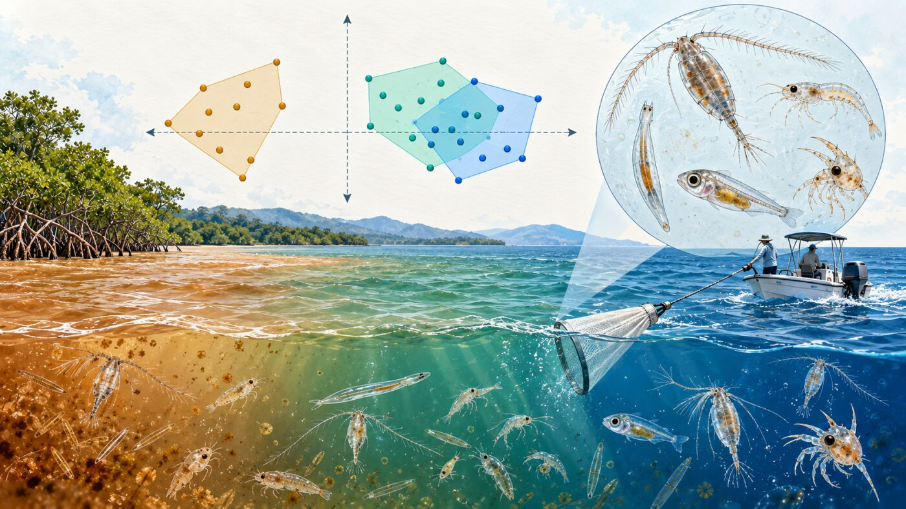
En el estudio de caso del Taller 7, la salinidad bastaba para separar el ambiente de las zonas fluvial, estuarina y marina del golfo de Urabá. Ahora la pregunta es por la comunidad: ¿se separan las 24 muestras de mesozooplancton (6 estaciones × 2 mallas × 2 capas) según su composición de 12 grupos? Se ajusta un NMDS con Bray-Curtis y se proyectan la zona, la malla, la capa y la salinidad.
Antes de correr el código, se responde por escrito:
- El total de organismos por muestra va de pocas decenas a más de diez mil. Con la autotransformación de
metaMDS(), ¿qué parte de esa diferencia verá el NMDS? - ¿Se espera que la zona fluvial se separe por su composición, como lo hizo por su salinidad? ¿Y la estuarina de la marina?
- La malla (250 frente a 500 μm) es un factor del método de muestreo. ¿Qué significaría que separara las muestras más que la zona?
- Cada estación aporta 4 muestras (2 mallas × 2 capas). ¿Cuántas réplicas independientes tiene cada zona?
Paso 1 — Base ancha del plancton
Código
# Hoja «Riqueza» depurada y base ancha (igual que en la Parte 3 del Taller 5)
biol <- read_xlsx("plancton.xlsx", sheet = "Riqueza") %>%
mutate(Groups = str_trim(Groups),
Station = factor(Station),
Size = factor(Size),
Layers = recode_factor(Layers, Depth = "Profunda",
Surface = "Superficial"))
taxones <- unique(biol$Groups)
amb <- biol %>%
group_by(Station, Size, Layers) %>%
summarise(across(c(Temperature, Salinity, Density), mean),
.groups = "drop")
tax <- biol %>%
group_by(Station, Size, Layers, Groups) %>%
summarise(Abundance = sum(Abundance), .groups = "drop") %>%
pivot_wider(names_from = Groups, values_from = Abundance, values_fill = 0)
zonas <- tibble(Station = factor(c(2, 4, 7, 9, 13, 15)),
Zona = factor(rep(c("Fluvial",
"Estuarina", "Marina"), each = 2),
levels = c("Fluvial",
"Estuarina", "Marina")))
pl_ancho <- amb %>%
left_join(tax, by = c("Station", "Size", "Layers")) %>%
mutate(Ab = rowSums(across(all_of(taxones)))) %>%
left_join(zonas, by = "Station")
# Matriz de la comunidad
Y_pl <- pl_ancho %>% select(all_of(taxones))
c(muestras = nrow(Y_pl), grupos = ncol(Y_pl), ceros = round(100 * mean(Y_pl == 0), 1))muestras grupos ceros
24.0 12.0 31.6 Código
range(pl_ancho$Ab)[1] 17 14030Paso 2 — Estrés con k = 1, 2 y 3
Código
# NMDS con Bray-Curtis para k = 1, 2 y 3
nmds_pl_k <- map(1:3, function(k) {
set.seed(2026)
metaMDS(Y_pl, distance = "bray", k = k, trymax = 100, trace = 0)
})
tab_k_pl <- tibble(k = 1:3, Estres = map_dbl(nmds_pl_k, "stress"),
Calidad = semaforo(Estres), Repeticiones = map_dbl(nmds_pl_k, "converged"))
tab_k_pl# A tibble: 3 × 4
k Estres Calidad Repeticiones
<int> <dbl> <fct> <dbl>
1 1 0.326 Casi arbitraria 0
2 2 0.162 Aceptable 2
3 3 0.0960 Buena 8Código
# NMDS elegido
nmds_pl <- nmds_pl_k[[2]]
nmds_pl
Call:
metaMDS(comm = Y_pl, distance = "bray", k = k, trymax = 100, trace = 0)
global Multidimensional Scaling using monoMDS
Data: wisconsin(sqrt(Y_pl))
Distance: bray
Dimensions: 2
Stress: 0.1618801
Stress type 1, weak ties
Best solution was repeated 2 times in 20 tries
The best solution was from try 4 (random start)
Scaling: centring, PC rotation, halfchange scaling
Species: expanded scores based on 'wisconsin(sqrt(Y_pl))' Paso 3 — NMDS por zona, malla y capa
Código
# Coordenadas y polígonos por zona
sc_pl <- as_tibble(scores(nmds_pl, display = "sites")) %>%
bind_cols(pl_ancho %>% select(Station, Size, Layers, Zona, Ab))
pol_pl <- sc_pl %>% group_by(Zona) %>% slice(chull(NMDS1, NMDS2))
ggplot(sc_pl, aes(NMDS1, NMDS2, color = Zona)) +
geom_polygon(data = pol_pl, aes(fill = Zona),
alpha = 0.12) +
geom_point(aes(shape = Size), size = 3) +
geom_text_repel(aes(label = Station), size = 3,
show.legend = FALSE) +
geom_hline(yintercept = 0, linetype = 3) +
geom_vline(xintercept = 0, linetype = 3) +
scale_color_manual(values = col_zona) +
scale_fill_manual(values = col_zona) +
coord_equal() +
labs(shape = "Malla") +
theme_bw()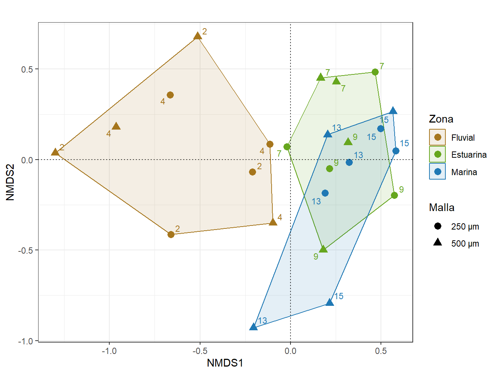
Paso 4 — Factores y salinidad sobre el NMDS
Código
# Zona, malla y capa como factores; salinidad y temperatura como vectores
set.seed(2026)
ef_pl <- envfit(nmds_pl ~ Zona +
Size + Layers +
Salinity + Temperature,
data = pl_ancho,
permutations = 999)
ef_pl
***VECTORS
NMDS1 NMDS2 r2 Pr(>r)
Salinity 0.90238 -0.43095 0.5064 0.002 **
Temperature -0.64800 -0.76164 0.1316 0.230
---
Signif. codes: 0 '***' 0.001 '**' 0.01 '*' 0.05 '.' 0.1 ' ' 1
Permutation: free
Number of permutations: 999
***FACTORS:
Centroids:
NMDS1 NMDS2
ZonaFluvial -0.5655 0.0637
ZonaEstuarina 0.2688 0.0984
ZonaMarina 0.2967 -0.1621
Size250 μm 0.0980 0.0247
Size500 μm -0.0980 -0.0247
LayersProfunda 0.1112 0.1231
LayersSuperficial -0.1112 -0.1231
Goodness of fit:
r2 Pr(>r)
Zona 0.4462 0.001 ***
Size 0.0263 0.558
Layers 0.0708 0.191
---
Signif. codes: 0 '***' 0.001 '**' 0.01 '*' 0.05 '.' 0.1 ' ' 1
Permutation: free
Number of permutations: 999
NotaVerificación (desplegar después de responder)
- Casi nada. El total va de 17 a 14 030 organismos, pero la salida dice
Data: wisconsin(sqrt(Y_pl)): cada muestra se divide por su total y el NMDS compara proporciones de grupos. La abundancia total, que en este estuario cambia mucho entre zonas y mallas, se analiza aparte (por ejemplo, con un GLM de conteos y offset, Taller 4). - La zona se asocia con el mapa (r² = 0.45; p = 0.001), y la salinidad también (r² = 0.51; p = 0.002). En la Figura 11 la zona fluvial se separa en el extremo negativo del NMDS1, pero la estuarina y la marina se solapan: la comunidad distingue el río del resto, no tanto el estuario del mar. El estrés con k = 2 es 0.16 (aceptable), mayor que en las microalgas, y la mejor solución salió de un arranque aleatorio y se repitió solo 2 veces: aquí la semilla sí importa, y conviene confirmar el patrón con otra semilla o un
trymaxmayor. - Sería una señal de que el método pesa más que la ecología. No ocurre: la malla (r² = 0.03; p = 0.558) y la capa (r² = 0.07; p = 0.191) apenas se asocian con el mapa. Eso no significa que las mallas capturen lo mismo en cantidad: la doble estandarización borró esas diferencias (respuesta 1).
- Dos: las estaciones. Las 4 muestras de una estación comparten sitio, fecha y masa de agua; tratarlas como 4 réplicas de la zona es pseudorreplicación. El p de
envfit()para la zona permuta las 24 muestras como si fueran independientes y es optimista. Una prueba honesta permutaría estaciones completas (constratao conhow()en la PERMANOVA del Taller 10), y con solo dos estaciones por zona su potencia sería muy baja: es un límite del diseño, no del análisis (RA1).
Lección para el estudio de caso: el NMDS muestra composición relativa; antes de interpretar un factor sobre el mapa se revisa qué unidad es la réplica independiente.
Cierre — Una base para el futuro proyecto de grado
Actividad en clase (10 minutos, sin código)
En parejas, se responde sobre el proyecto de grado de cada integrante o sobre una base de su línea de investigación (presentación 08, diap. 22 y 23):
- ¿Qué distancia se usaría (Bray-Curtis, Jaccard, chi-cuadrado o euclidiana con Hellinger) y por qué? ¿Hace falta transformar las abundancias?
- ¿NMDS o CA? ¿Qué rasgo de los datos decide la elección: los ceros, la longitud del gradiente, el tipo de respuesta de las especies o el peso de las raras?
- ¿Qué variables ambientales se ajustarían con
envfit(), y cuál podría requerirordisurf()por tener una relación no lineal? - ¿Cuál es la réplica independiente del diseño (estación, transecto, parcela, lance)? ¿Cuántas hay por grupo?
Antes de la próxima sesión (tarea corta)
Con una base propia (o con datos simulados plausibles del propio tema):
- Se calcula la distancia elegida y se ajusta un NMDS con k = 1, 2 y 3; se reportan el estrés y el diagrama de Shepard (Parte 2).
- Se construye la figura con polígonos por un factor y se ajustan dos o tres variables con
envfit()(Parte 3). - Se corre
decorana()y, según la longitud del gradiente, se decide si un CA aporta (Parte 4); se escribe un párrafo como el de «Cómo reportar el resultado» y se revisa la lista de verificación.
Este material alimenta la sección de análisis multivariado del documento final del estudio de caso (rúbrica R5: transformación y distancia justificadas, y diagnóstico propio de cada técnica).
Material de apoyo

Para repasar y profundizar después de la sesión:
- Cuestionario 1 · NMDS y CA — 12 preguntas de opción múltiple con pista y explicación, basadas en las Partes 1 a 5 y en el estudio de caso.
- Material complementario · NMDS y CA — NMDS de los peces del río Doubs con figuras en ggplot2, PCoA con corrección de autovalores negativos, DCA (decorana()) y reducción del peso de los raros, análisis de correspondencias múltiples (MCA) para variables categóricas, y guardado automático de figuras y tablas.
Referencias
Borcard, D., Gillet, F., & Legendre, P. (2018). Numerical Ecology with R (2nd ed.). Springer. https://doi.org/10.1007/978-3-319-71404-2
Clarke, K. R. (1993). Non-parametric multivariate analyses of changes in community structure. Australian Journal of Ecology, 18(1), 117–143. https://doi.org/10.1111/j.1442-9993.1993.tb00438.x
Hill, M. O., & Gauch, H. G. (1980). Detrended correspondence analysis: an improved ordination technique. Vegetatio, 42, 47–58. https://doi.org/10.1007/BF00048870
Kruskal, J. B. (1964). Multidimensional scaling by optimizing goodness of fit to a nonmetric hypothesis. Psychometrika, 29(1), 1–27. https://doi.org/10.1007/BF02289565
Legendre, P., & Gallagher, E. D. (2001). Ecologically meaningful transformations for ordination of species data. Oecologia, 129(2), 271–280. https://doi.org/10.1007/s004420100716
Legendre, P., & Legendre, L. (2012). Numerical Ecology (3rd ed.). Elsevier.
Minchin, P. R. (1987). An evaluation of the relative robustness of techniques for ecological ordination. Vegetatio, 69, 89–107. https://doi.org/10.1007/BF00038690
Oksanen, J., Simpson, G. L., Blanchet, F. G., Kindt, R., Legendre, P., Minchin, P. R., et al. (2025). vegan: Community Ecology Package. https://CRAN.R-project.org/package=vegan
Osorio Ávila, F. J., Rodríguez Barrios, J., & Montoya Moreno, Y. (2015). Sucesión de microalgas perifíticas en tributarios del río Gaira, Sierra Nevada de Santa Marta-Colombia. Acta Biológica Colombiana, 20(2), 119–131. https://doi.org/10.15446/abc.v20n2.41932 — Base de datos
Microalgas.Peres-Neto, P. R., & Jackson, D. A. (2001). How well do multivariate data sets match? The advantages of a Procrustean superimposition approach over the Mantel test. Oecologia, 129(2), 169–178. https://doi.org/10.1007/s004420100720
Vargas-Ospina, B., Córdoba-Bejarano, J. A., Riquelme-Bugueño, R., Flórez-Leiva, L., & Rodríguez-Barrios, J. (2025). Short-term variations of mesozooplankton in a tropical estuary, Caribbean Colombia. Wetlands, 45, 83. https://doi.org/10.1007/s13157-025-01951-7 — Base de datos
plancton.xlsx.
Nota
Las figuras y el código de este taller son de elaboración propia a partir de las bases citadas; la comunidad de la Figura 9 es simulada. No reproducen ejercicios ni código de las fuentes bibliográficas.